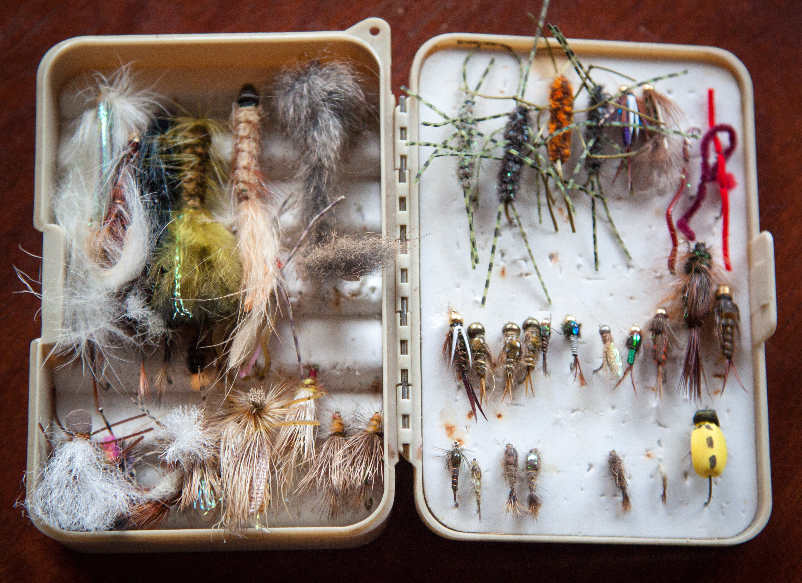
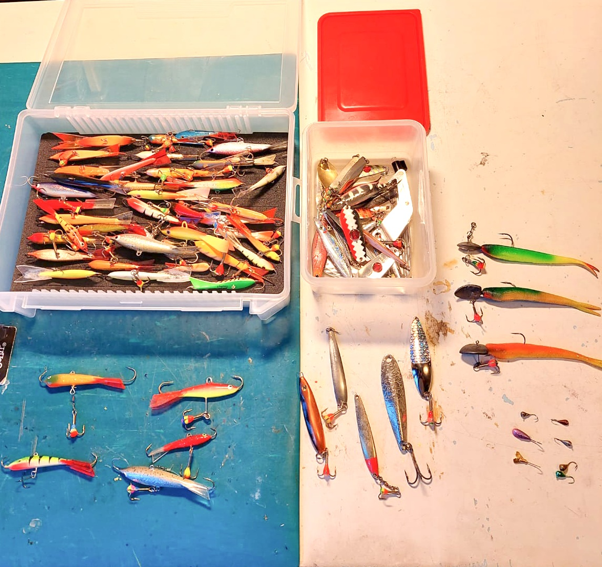
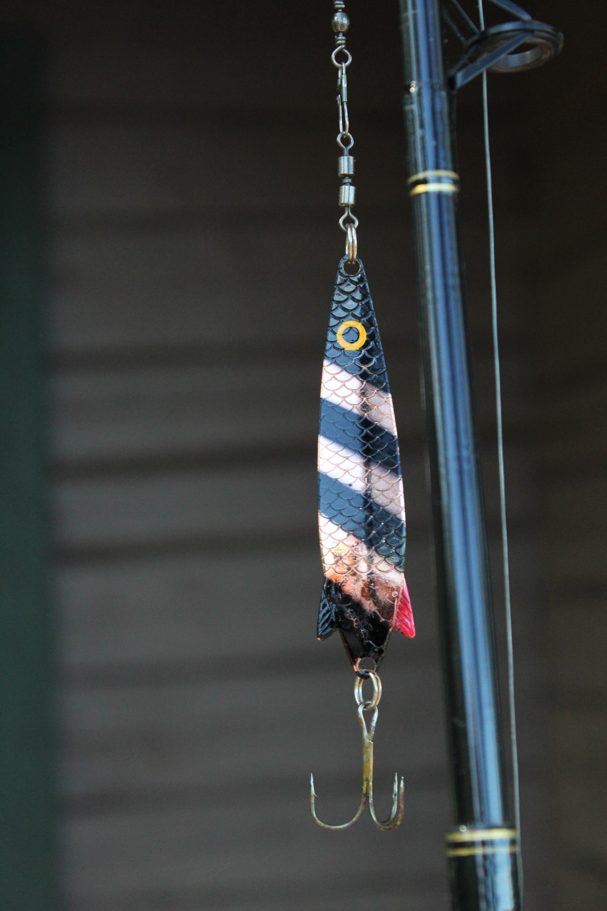
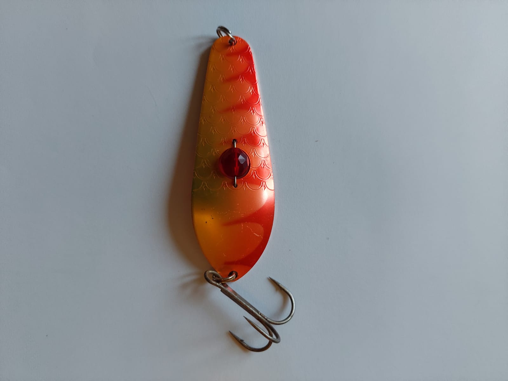
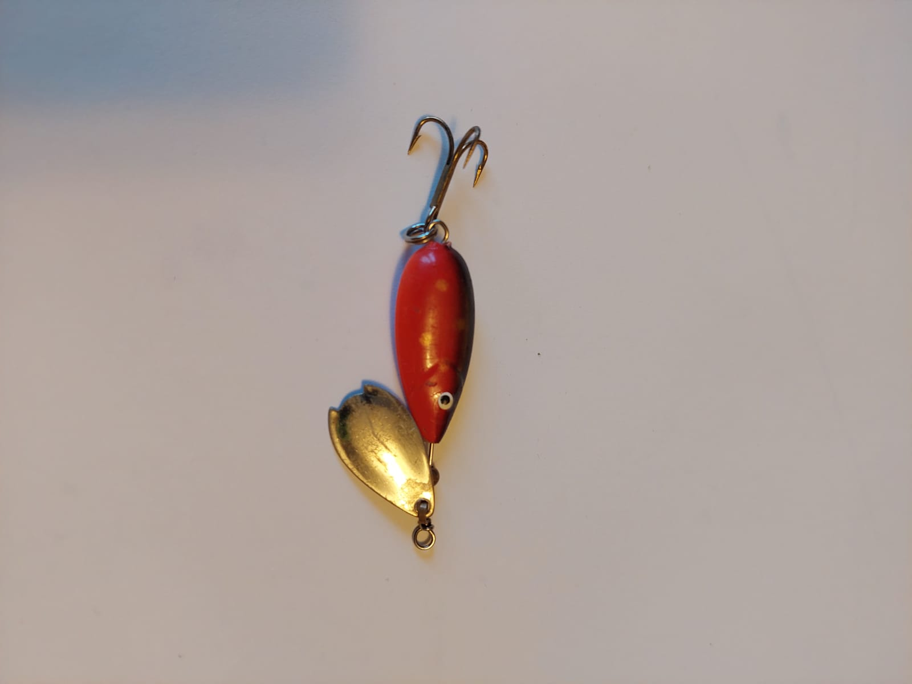
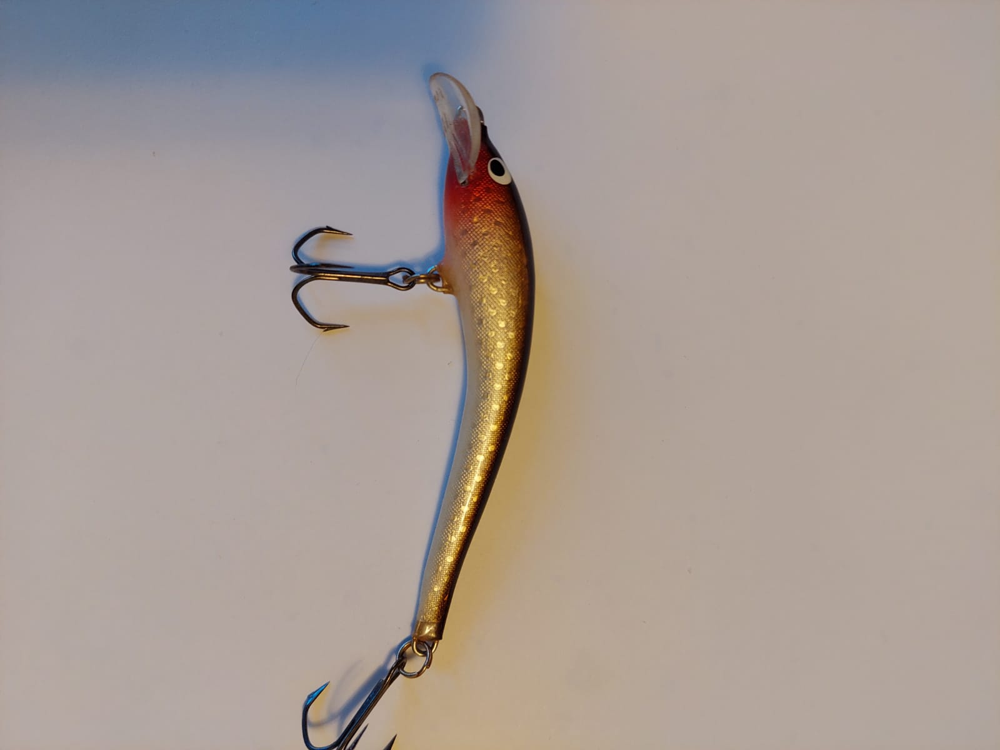
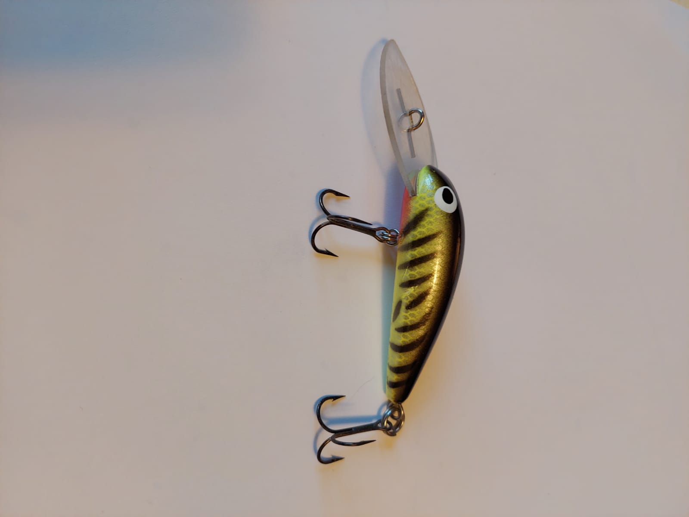
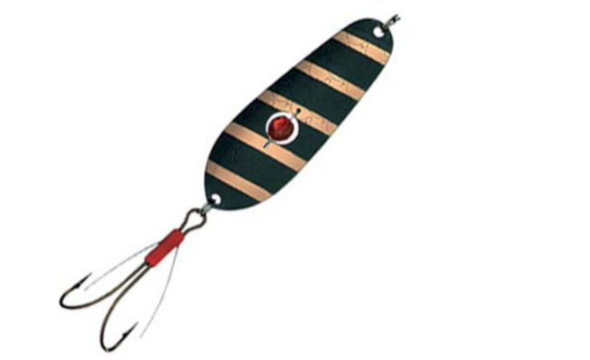
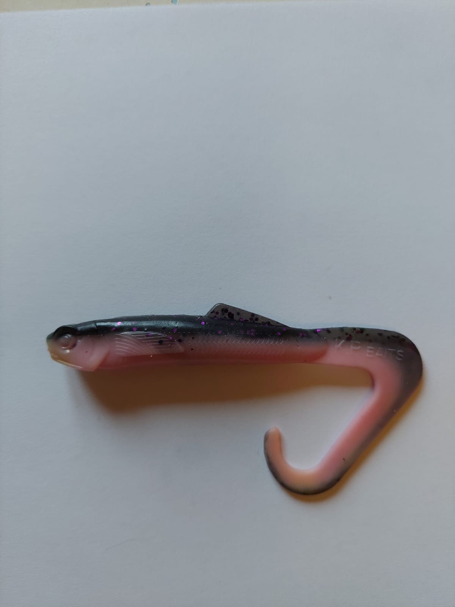

Vieheet
Päivitetty: 29.11.2021
 Yleinen kuvaus vieheistä
Vieheet ovat kalastuksessa käytettäviä esineitä, jotka toimivat yleensä vavan päähän laitettavana syöttinä, jonka tarkoitus on herättää kalan saalistusvietti. Vieheitä on monen muotoisia, kokoisia ja värisiä, ja niissä on yleensä yksi tai kolmipäinen koukku. Olemme listanneet tälle sivustolle muutamia tunnetuimpia esimerkkejä vieheistä.
Uistimet
Päivitetty: 29.11.2021

Kuvaus uistimista
Uistin on kalastuksessa käytettävä väline, jota käytetään heittokalastuksessa ja vetouistelussa, mutta voi käyttää myös pilkkimiseen. Uistin muodostuu rungosta ja koukusta, joita voi olla yksi tai useampi. Uistintyyppejä on useita erilaisia, joista yleisempiä ovat vaaput, lusikat, jigit ja lipat. Uistimen runko herättää saaliin kiinnostuksen ulkomuodollaan ja liikkeellään, uistin voi muistuttaa pientä kalaa, joka kimaltaa liikehtiessään aidon kalan tavoin ja herättää huomion.
Lusikkauistin
Päivitetty: 29.11.2021
 Lusikkauistimen kuvaus
Lusikkauistin on saanut nimensä lusikkaa muistuttavan kuperan muotonsa takia, ja alkuperästään, jossa lusikkamuottia käytettiin tämän uistimen valmistukseen. Lusikkauistin tehdään perinteisesti metallista, kuten messingistä, kuparista tai uushopeasta.
Lippauistin
Päivitetty: 29.11.2021
Lippa-uistimen kuvaus
Lippa-uistimessa on nopeasti pyörivä lehtimäinen osa, ja sen perässä uiskentelevan pikkukalan näköinen osa ja koukku. Tämä viehe aiheuttaa liikkeellään värähtelyä vedessä, jonka tarkoitus on herättää petokalojen huomio. Tästä viehemallista löytyy monenlaisia versioita eri liikkeissä.
Vaappu-uistin
Päivitetty: 29.11.2021
 Vaappu-uistimen kuvaus
Perinteisesti kalaa muistuttava viehe, jonka kärjessä on muovinen tai metallinen lippa, jonka koko määrittää vaapun uintisyvyyden. Vaapussa voi olla koukut vaapun keski- sekä peräosassa.
Ruohosuojattu-uistin
Päivitetty: 29.11.2021
Ruohosuojatun uistimen kuvaus
Tämä uistintyyppi on suunniteltu toimimaan vesikasvillisuuden seassa, koska siinä on metalliviiksiä uistimessa ja koukussa, joiden tehtävä on ohjata vesikasvillisuus pois uistimen tieltä ja estää niihin tarttuminen. Kala pystyy tarttumaan koukkuun näistä metalliviiksistä huolimatta, mutta se voi olla hieman hankalampaa. Tietyt petokalat kuten esimerkiksi hauki, viihtyy vesikasvien kuten kaislojen ja lumpeiden suojassa. Tämä viehe mahdollistaa myös kalastuksen hankalissa paikoissa.
Jigi
Päivitetty: 29.11.2021

Kuvaus jigistä
Jigi eroaa muista uistimista pehmeällä matoa/toukkaa muistuttavalla ulkomuodollaan, ja ylöspäin osoittavalla koukullaan, jolla estetään pohjaan kiinnijääminen. Jigillä kalastus vaatii yleensä omanlaista uittamistyyliä kelan ja vavan liikettä säätämällä.
Perho
Päivitetty: 29.11.2021

Kuvaus perhosta
Perhokalastuksessa käytettävää syöttiä kutsutaan perhoksi, se on kevyt syötti, joka imitoi siivekästä hyönteistä ulkomuodollaan, ja se voi olla tehty langoista tai vaikka linnunsulista.